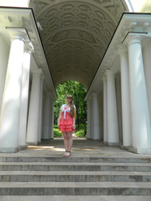
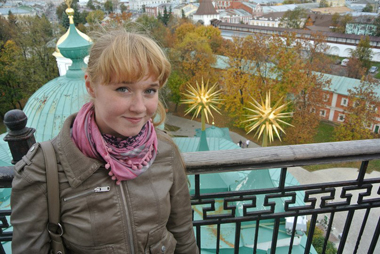

Было бы странно советовать людям куда-либо ехать и ходить, если сам автор сайта нигде не был. Поэтому данную страницу я решила посвятить местам, где была лично :)

Царицыно - одна из самых необыкновенных усадеб в Москве, да, можно сказать, во всей России. Удивляют и привлекают странная судьба ее, не разгаданная до сих пор загадка, связанная с ее строительством, сам облик огромной усадьбы Царицыно, романтический и несколько таинственный, похожий на музей безудержных затей 18 в., богатого на выдумки, фантазии и капризы, неоднократные попытки достроить ее, медленное, на протяжении двух сотен лет, угасание.
Государственный историко-архитектурный, художественный и ландшафтный музей-заповедник "Царицыно" основан в 1984 году и разместился в дворцовом ансамбле несостоявшейся подмосковной резиденции императрицы Екатерины II. Архитектурно-парковый комплекс был создан в последней трети XVIII - начале XIX века; архитекторы - В.И. Баженов, М.Ф. Казаков, И.В. Еготов, ландшафтные архитекторы - Ф. Рид, К.-С Унгебауэр. Руинированные дворцы, перестроенные павильоны, неухоженный парк нуждались в срочной реставрации.
Если вы намерены посетить Ярославль, этот славный город с 1000-летней историей, то, конечно, лучше заранее узнать все про достопримечательности Ярославля. Ведь человеку, который ни разу не был в этом городе на Волге крайне сложно сориентироваться. Причина в том, что практически весь исторический центр Ярославля – одна «сплошная достопримечательность»! Недаром, именно центр города Ярославля включен в список культурного наследия, охраняемого ЮНЕСКО. Интересный факт: в городе располагается 785 памятников истории и культуры (7 памятников археологии, 13 памятников искусства, 722 памятника архитектуры и 43 памятника истории)!


Московский Кремль расположен в самом центре столицы России и является историческим центром Москвы. Его мощные стены и башни, златоглавые храмы, древние терема и дворцы возвышаются на Боровицком холме над Москвой-рекой и образуют неповторимый по красоте и величию архитектурно-художественный ансамбль. Именно с появления Кремля начинается история Москвы как таковой. Являясь уникальным памятником архитектуры, он исторически считается символом не только столицы, но и всей России в целом. Известно, что в Древней Руси слово «кремль» употреблялось для обозначения центральной укрепленной части города — крепости.
Вообще туристы едут в Финляндию зимой сразу по многим причинам. Например, чтобы аутентично встретить Новый год всей семьей в компании с оленями и локальной разновидностью Деда Мороза, имя которого с налету и не выговоришь. Или чтобы пожить в избушке прямо в завораживающе красивом зимнем лесу, покататься по льду замерзшего озера на коньках или санках, увидеть северное сияние как минимум пятью разными способами. Чтобы как следует попариться в жаркой финской сауне… За многими, в общем, вещами, кроме острых горнолыжных ощущений. Здешние трассы, хоть и поддерживаются в очень хорошем состоянии, не могут похвастать значительными перепадами высот и интересными спусками.


Есть в Беларуси такой городок Несвиж, который находится ста двенадцати километрах к юго-западу от Минска. В нем находится Несвижский замок – родовое гнездо династии Радзивиллов. Радзивиллы – один из самых знатных литовских династий, который имел огромное влияние в Великом княжестве Литовском и за его пределами.
В наши дни в замке можно встретить и вполне осязаемых дам в чёрных одеяниях – например, на проводимых здесь концертах камерной музыки. Тенденцией нового времени стало и возрождение практики организации балов и других костюмированных представлений, связанных с исторической реконструкцией. В общем, Несвиж потихоньку возвращает себе прежний шляхетный лоск, что, безусловно, не может не радовать.
Несебр расположен на маленьком полуострове, один из древнейших городов в Европе, в памяти которого по сей день хранятся материальные свидетельства духовной культуры разных эпох и народов. Ценнейшее богатство Несебра - это его многочисленные церкви. Примечательны своей красотой и несебрские дома эпохи национального Возрождения. В настоящее время Несебр - это небольшой курортный город, состоящий из двух частей: старого и нового города. Несебр— жемчужина Болгарии: шедевр архитектуры, сохранившийся до наших времен. Город расположен на скалистом полуострове 850 метров длиной и 300 метров шириной в 37 км севернее Бургаса


С тех пор, как в Таиланде механизировали заготовку леса, рабочие слоны оказались не у дел. Сейчас слонов используют как рабочую силу только на севере страны. Одним из способов сохранить этот национальный символ Таиланда стала организация многочисленных развлечений для туристов с участием слонов. Различные зоопарки устраивают забавные слоновьи шоу с участием дружелюбных великанов. Огромной популярностью пользуются прогулки на слонах. В курортных зонах, например, таких как Паттайя, есть слоновьи деревни. Кроме того, прогулка на слоне включена в программу многих туров, в том числе на островах Пхукет и Самуи.
Кириллова Ольга 2013 ©